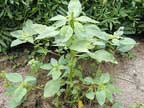
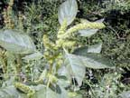
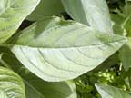
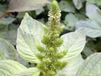
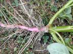
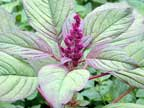

Redroot
Amaranthus powellii
Other names
Description
A herb with green to reddish stems, growing up to 1 m. The pale green leaves are oval, with the upper ones being more lance-like or tapering. The flowers are in an open branched inflorescence both at the ends of stalks and in the axils. The plant bears a dry fruit.
Similar plants
Pigweed (A. retroflexus) (sometimes also called redroot). The sepals taper to a point in A. powellii, but are truncate in A. retroflexus.
Distribution
Common in cultivated land and in waste places in both the North and South Islands. The weed is often found in hay and other feed crops, as well as being common in pastures and farm yards. It grows well in low, fertile areas, especially if there is a high level of organic matter.
Toxin
The weed accumulates nitrates, which are metabolised to nitrites by rumen microflora. It is also associated with a nephrotic condition characterised by azotaemia and perirenal oedema. The toxic component that causes perirenal oedema/nephrosis of pigs and cattle has yet to be identified, although a number of phenolic compounds, similar to those in acorns, have been found in the leaves and roots. Redroot has been eaten as a vegetable in the past. Rain following dry or drought conditions causes exuberant growth of the plants, resulting in a heavy accumulation of nitrates. The absence of light favours the storage of nitrate, while bright light causes its conversion to amino acids and proteins, so that overcast conditions also induce nitrate accumulation in the plants.
Species affected
Cattle (especially dairy cattle), sheep, deer and goats. Horses and pigs possess neither a rumen nor rumen microflora, so do not reduce nitrate to nitrite. There have been reports of poisoned pigs, but the plant source was cooked, thus reducing the nitrates to nitrites by the cooking process.
Clinical signs acute
Deaths occur within 6 - 24 hours, after a very acute clinical course. If the conversion of haemoglobin to methaemoglobin is gradual, gastrointestinal disturbances (eg salivation, abdominal pain, diarrhoea and vomiting), effects of oxygen deprivation (eg increased respiratory and heart rates, dyspnoea, gasping and cyanosis) and effects of cerebral anoxia (eg ataxia, muscle tremor, weakness, incoordination and convulsions) may all be seen. Nitrate nitrite poisoning has been blamed for abortion in cows, but this has yet to be proven. Clinical signs associated with renal disease include depression, anorexia, loss of condition and death.
Clinical signs chronic
Post mortem signs
Nitrate/nitrite toxicity: Blood and mucosal surfaces are a typical dark brown colour. Blood may change back from a brown colour to the expected red as a post mortem change, so the lack of brown blood should not rule out a diagnosis of nitrate nitrite poisoning. Typical effects of vasodilatation and anoxia will be seen both macroscopically and microscopically. In addition, plant material may be found in the rumen.
Renal toxicity: Poor body condition, perirenal oedema and pale kidneys with petechiae. Laboratory findings of azotaemia: elevated creatinine and urea concentration.
Diagnosis
Clinical signs, history, and post mortem findings.
Differential diagnosis
Nitrite poisoning can occur from many different sources. There are several plants which accumulate nitrates to toxic levels, eg brassicas, mangels, sugar beets, oats, ryegrasses, Cape weed (Cryptostemma calendula) and variegated thistle (Silybum marianum). Animals may also contact toxic amounts of nitrates from such things as contaminated water, commercial fertilisers and lubricating oil. Although it is unlikely that nitrate nitrite poisoning will be confused with other problems, copper or cyanide poisoning should be ruled out.
Treatment
Remove stock from the source immediately. Methylene blue (1 - 2 mg/kg as a 1 - 2% solution IV) converts methaemoglobin into oxyhaemoglobin. Hay should be fed to increase carbohydrate availability, thus supporting optimal rumen microbial activity and reducing the toxicity risks.
Prognosis
Animals able to be removed from the source usually recover spontaneously. Deaths may occur within 6 24 hours, before treatment is able to be implemented. Renal toxicity: Guarded to poor depending on severity of clinical signs and clinical pathology findings.
Prevention
Limit access to plants.
References
Conner H.E. The Poisonous Plants In New Zealand. 1992. GP Publications Ltd, Wellington
Oertly, D. and Black, A.. (2001) Amaranthus toxicity in lambs. Vetscript. 14, (9):10 - 11.
Parton K, Bruere A.N. and Chambers J.P. Veterinary Clinical Toxicology, 2nd ed. 2001. Veterinary Continuing Education Publication No. 208
Surveillance, 2005, 32 (2): 28
|  plant |
 |
|
|
 |
 |
|
|
|
 red root |
|
|
 |
|
|